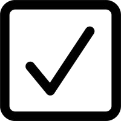
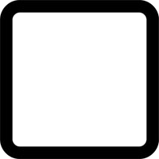

Основные понятия
Введение во Frontend Разработку
Frontend разработка отвечает за создание интерфейса пользовательской части веб-сайта или веб-приложения. Она включает в себя работу с HTML, CSS и JavaScript
Языки Frontend Разработки
Основными языками Frontend разработки являются:
-
HTML (Hyper Text Markup Language) - используется для структурирования содержимого веб-страницы;
-
CSS (Cascading Style Sheets) - используется для стилизации веб-страницы и создания её внешнего вида;
-
JavaScript - используется для добавления интерактивности на веб-страницу, такой как анимации, обработка событий и динамическое обновление содержимого.
Инструменты Frontend Разработки
-
Visual Studio Code - мощный редактор кода с поддержкой множества языков и плагинов;
-
React - библиотека для создания пользовательских интерфейсов;
-
SASS - препроцессор CSS с расширенными возможностями;
-
Webpack - сборщик модулей для JavaScript-приложений.
Навыки Frontend-разработчика
Среди всего многообразия языков программирования и иструментов разработчика необходимо чётко понимать, какие навыки и умения необходимо развивать и какие требования предъявляют к их уровню работодатели.
| Навыки | Junior | Middle | |
|---|---|---|---|
| HTML | Верстка основных элементов |  | |
| Соблюдение семантики | |||
| Доступность сайта | базовые знания | продвинутые знания | |
| Шаблонизаторы |  | ||
| Микроразметка | |||
| Вёрстка под React(JSX, CSS-in-JS) | |||
| CSS | Сетки (Flex, Grid) | ||
| Работа со шрифтами | вариативные шрифты | оптимизация шрифтов | |
| Препроцессоры SASS, Less, PostCSS | |||
| Методология БЭМ | |||
| Фреймворк Bootstrap | |||
| Фреймворк Tailwind CSS | |||
| JavaScript | Базовый синтаксис и конструкции | ||
| React | |||
| TypeScript | |||
| StateManagement (Redux, Mobx) | |||
| SSR (Next.js) | |||
| Итого: | опыт < 1 года | опыт 1-3 года | |